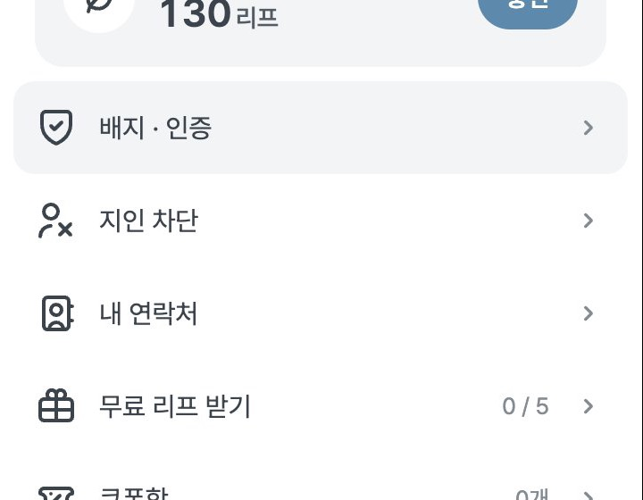
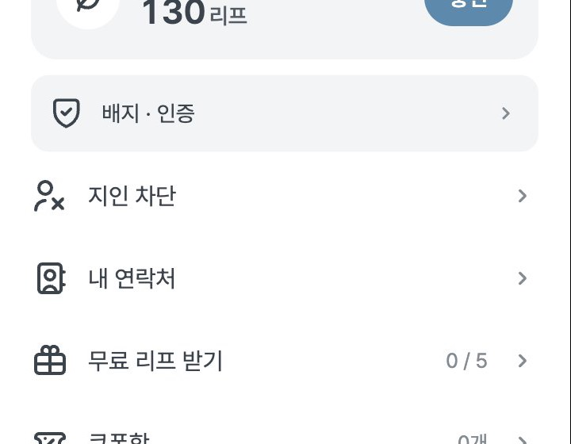
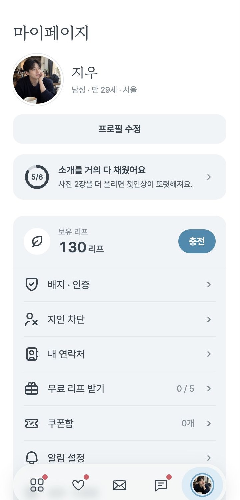
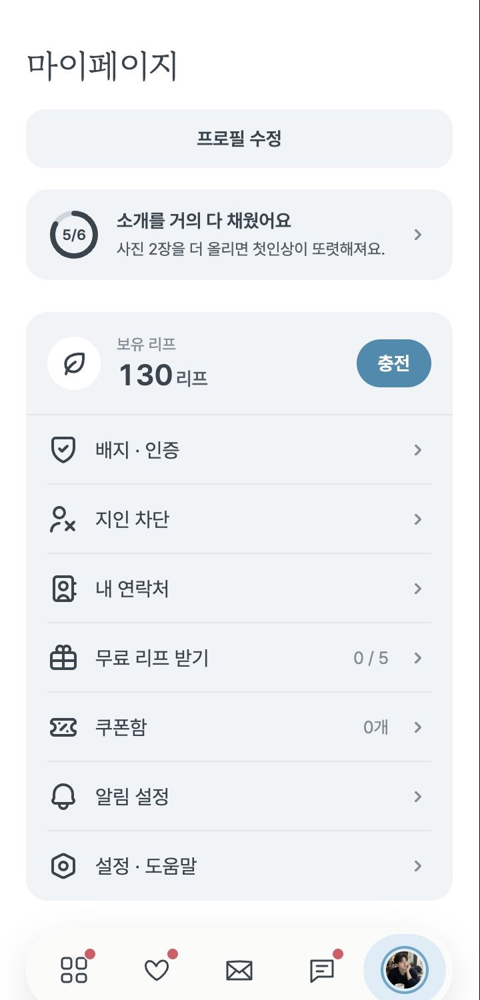
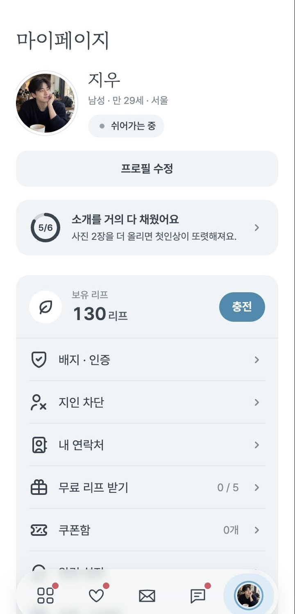
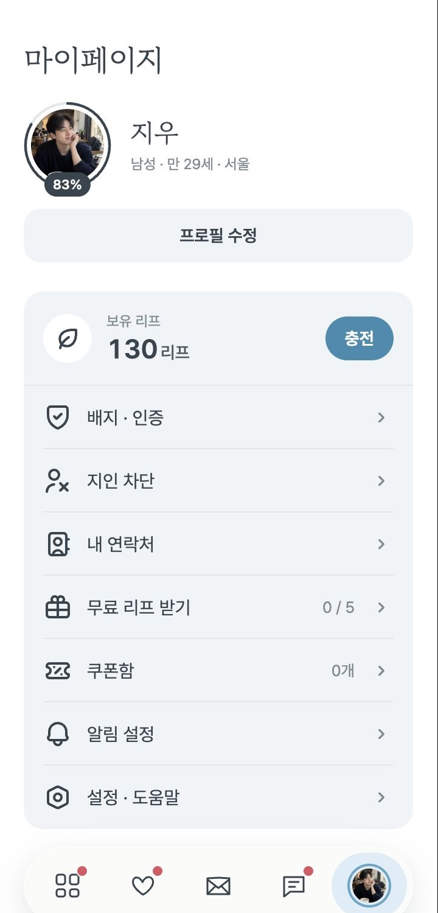
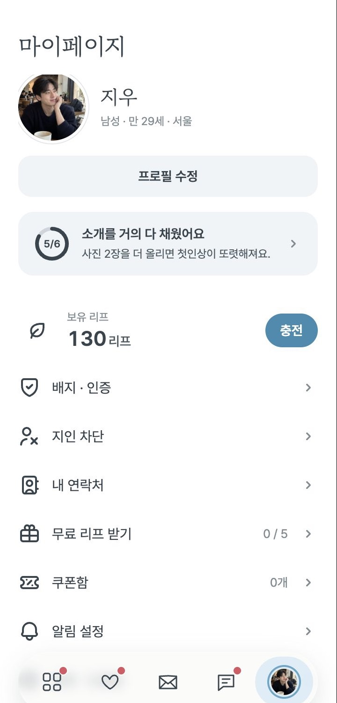
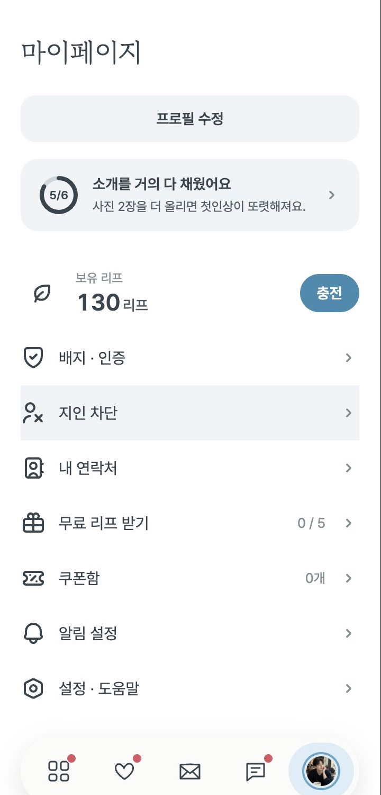
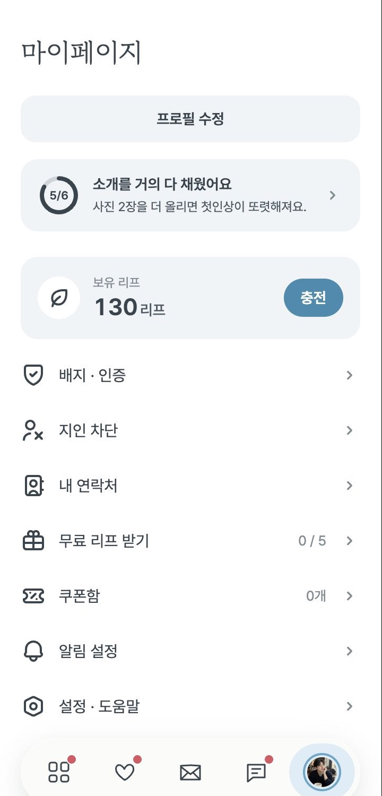
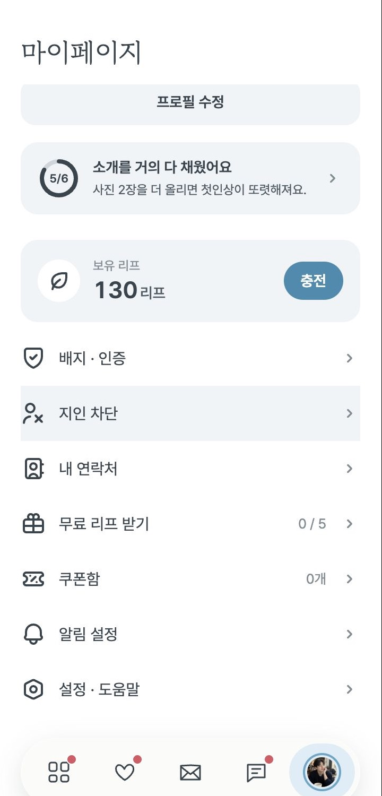

마이페이지 · 2차 피드백
- 데모에 넣은 것: ① 최근 활동 표시 스위치 없앰(24시간 안 접속이면 자동으로 "최근활동") ② "공개 중" 칩 없앰 — 인연 쉬어가기는 설정 · 도움말 › 계정 관리 안에만 ③ 사진 연필 없앰, 사진을 누르면 내 프로필 보기 · 수정은 "프로필 수정" 버튼 하나 ⑤ 묶음 제목 없이 한 목록(팀 링크 순서).
- 아래는 고를 것: 쉬어가는 중일 때만 칩 · 채움 정도를 사진 링으로 · 목록 회색 바탕 줄이기.
L3 다듬기 · 쉴 때는 넓게, 누르면 리프 카드 폭으로
- 쉴 때: 목록 아이콘 · 화살표가 보유 리프 카드 테두리 선에 딱 맞게(예전처럼 넓게).
- 마우스 올림: 회색 박스가 카드보다 좌우 12씩 넓게 깔려요(모서리 12, 이제 안 잘려요).
- 누름: 줄 전체가 줄어들며 회색 박스 좌우가 보유 리프 카드 테두리와 정확히 같아져요(폭 320 → 줄어든 비율 약 93%). 떼면 바로 돌아와요.
- 잘리던 이유: 마이페이지 스크롤 영역이 카드 폭(좌우 20 안쪽)에서 잘라서. 스크롤 영역을 화면 끝까지 넓히고 안쪽 20을 두어 고쳐요.


지금 데모(결정 반영)


2 · 쉬어가는 중일 때만 칩
- 공개 중이면 아무것도 없고(위 "지금"), 쉬어가는 중일 때만 이름 아래 회색 점 + "쉬어가는 중". 눌러도 이동하지 않아요(다시 공개는 계정 관리에서).

3 · 채움 정도를 사진 링으로 · 카드 빼기
- 사진 둘레에 채움 링(cool-neutral-800) + 아래 "83%" 알약. "소개를 거의 다 채웠어요" 카드는 빼요. 무엇이 비었는지는 프로필 수정 안에서 보여요.


5 · 목록 회색 바탕 줄이기
- L2 배경 없음: 보유 리프 · 목록 모두 바탕 없이, 누르거나 마우스를 올릴 때만 그 줄에 회색 박스(cool-neutral-50, 모서리 12). 오른쪽은 "지인 차단"을 누르고 있는 모습.
- L3 리프만 카드: 보유 리프 + 충전만 회색 카드로 두고, 목록은 배경 없이 누를 때만 회색.



